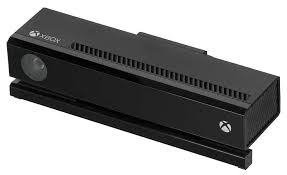

The Kinect was a revolutionary motion-sensing device developed by Microsoft for use with the Xbox 360 and Xbox One consoles. The first version, released in 2010 for the Xbox 360, was designed to allow players to control games through physical movement and voice commands, without the need for a traditional controller. It featured an RGB camera, depth sensor, and multi-array microphone, which tracked the player’s body movements and voice. The Kinect for Xbox 360 was a major innovation at the time, offering interactive experiences in games like Kinect Adventures! and fitness titles like Your Shape: Fitness Evolved. It also allowed users to navigate the Xbox 360’s interface using voice commands and motion, a feature that was ahead of its time. In 2013, Microsoft released the Kinect 2.0 for the Xbox One, which featured improved technology. The second-generation Kinect had a higher resolution camera, a wider field of view, and more precise motion tracking, making it even more responsive to user input. It also offered improved voice recognition, with better noise cancellation and speech understanding. However, despite its technical advances, the Kinect 2.0 struggled to gain widespread popularity. Microsoft eventually discontinued the Kinect in 2017, as it was no longer a key part of their gaming strategy. Despite this, the Kinect remains a notable example of early motion-based gaming technology.
Source: target="_blank">Microsoft